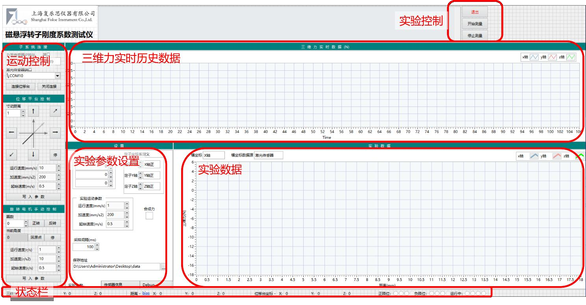

磁悬浮转子三维刚度测试仪 科学仪器与设备


科学仪器与设备
联系我们
磁悬浮转子三维刚度测试仪
定位精度0.01mm，三维力测量±50N，服务人工心脏与磁悬浮轴承测试。
核心技术参数
| 定位精度 | 0.01mm |
|---|---|
| 三维力测量 | ±50N，精度 ±0.1N |
| 转速测试 | 0.01–800 rpm 反电势测量 |
| 测试对象 | 磁悬浮转子刚度特性 |
应用领域
- 人工心脏（血泵）研发与产品检测
- 磁悬浮轴承性能测试